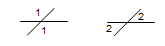

In the figure below, the line AB is a transversal. It cuts across the
parallel lines
PQ and RS.
If it crosses the parallel lines at
right angles
it is called a perpendicular transversal. If you carefully adjust A or B below, you can create this type.
If the transversal cuts across lines that are not parallel, it has no particular properties of note. In the figure above, move the point P or Q so that the lines are no longer parallel. Notice that the angles around E have no real relationship to those around F.
If the transversal cuts across parallel lines (the usual case) there is one key property to note: The corresponding angles around each intersection are equal in measure. In the figure above, you can see that the four angles around the point E look just the same as the four angles around the point F. Drag the points A and B and convince yourself this is so.
From this central fact, other named pairs of angles are derived described on other pages. But for now, remember that there are two sets of four angles, and all angles in each set are equal in measure. In the figure above, all the red angles are equal and all the gray angles are equal no matter how you move the points A and B.

At each point E, F there are two pairs of vertical angles which are equal as shown on the right. Since the points E and F are identical arrangements, the two corresponding pairs at E and F are equal also.